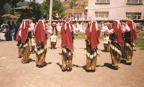

Sakarya'nın geleneksel oyunları
Yöreye insanlar değişik yerleşim alanlarından geldiği için, gelenekler ve göreneklerde farklılıklar gözlenmektedir. Bu çoklu yapı, gelenek ve görenekler çeşitliliği de beraberinde getirmektedir. Halk oyunları da bu yapıdan etkilenmiştir. Yörede oynanan halk oyunlarını iki ana grupta incelemek mümkündür:
Sakarya yöresi halk oyunları
- Konak Getirme
- Var Gel (Vama-Geme)
- Meşeli
- Genç Osman
- İnce Hava
- Geyve-Taraklı Çiftetellisi
- Öptürmem
- Geyve-Taraklı Zeybeği
- Korudere Zeybeği
- Herayi
- Geyve-Taraklı Kasabı
- Taraklı Karşılaması
- Bilecik Karşılaması
- Argat Sallaması
- Allı Yazma
- Karagözlüm
- Kocakarı Kocaadam
- Gelin Bindirme
- Gelin İndirme
- Kadın Karşılaması (A Meleğim)
- Domine/Dominik
- Nirinam
- Pamukova Zeybeği’dir.
